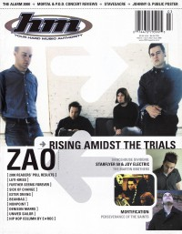

CMnexus
: Contemporary Christian culture, music, and media.
|
|
HM, Mar / Apr 2001, #88
| Cover |
|---|
|  | | Writers in this Issue |
|---|
Argyrakis, Andy
Bandoppler, Treble
Beeman, Bob
Bixler, David
Campbell, Earl
Crabb II, Kemper B.
Dodd, Jason E
Gutwein, Katherine L
Hatch, Scott
Jackson, Melba
Kid, Kern County
Minor, Kyle
Olson, Chad
Pogge, David M
Rake, Jamie Lee
Ralph, Matthew
Reed, Bethany
Rutherford, Brian
Short, Chris M.
Strole, L Jeanette
Van Pelt, Doug
Wignall, Matt
Wycoff, Collette
|
Cover Feature:Article:Hardnews:So & So Says....:Album Review:
- Lifehouse - No Name Face by Doug Van Pelt
- Narnia - Desert Land by Doug Van Pelt
- Mike Knott - The Life of David by Jason E Dodd
- Craig's Brother - Lost At Sea by Jason E Dodd
- 16 Horsepower - Secret South by Jamie Lee Rake
- Metropolis - International by L Jeanette Strole
- Spoken - Echoes of the Spirit Still Dwell by David Bixler
- Booley - Bathroom Floor by L Jeanette Strole
- Average Joe Aspiring - The Big Idea by Doug Van Pelt
- Element 101 - Stereo Girl by Jason E Dodd
- Adrian Gale - Feel the Fire by Doug Van Pelt
- Zao - (Self-Titled) by Jason E Dodd
- Live at Cornerstone 2000 by Doug Van Pelt
- The Deluxtone Rockets - Green Room Blues by Treble Bandoppler
- LN - Imaginary Cars by Jason E Dodd
- Broomtree - Maybe This Time by Jason E Dodd
- Feezel - Life Moves On by Kern County Kid
- Ester Drang - Goldenwest by Jason E Dodd
- Beanbag - Well Adjusted by Doug Van Pelt
- Bride - Fistful of Bees by Doug Van Pelt
- Deliverance - Back in the Day: The First Four Years by Doug Van Pelt
- various artists - Nothing Says "I Love You" Like Punk Rock Volume 2 by Kern County Kid
- Luti-Kriss - Throwing Myself by Brian Rutherford
- Lust Control - The Worst Of Lust Control by Melba Jackson
Concert Review:Event Review:Editorials, opinion, and commentary:
- "The Kids Just Want To Rock" by Scott Hatch
The Christian and Art: "The Sons of Issachar: Knowing What Israel Should Do, Part XXI" by Kemper B. Crabb II
Pastor Bob's Column by Pastor Bob
Poster:HM Back Page: "If Jesus Came Over To My House, This Is What I'd Do"
|
|